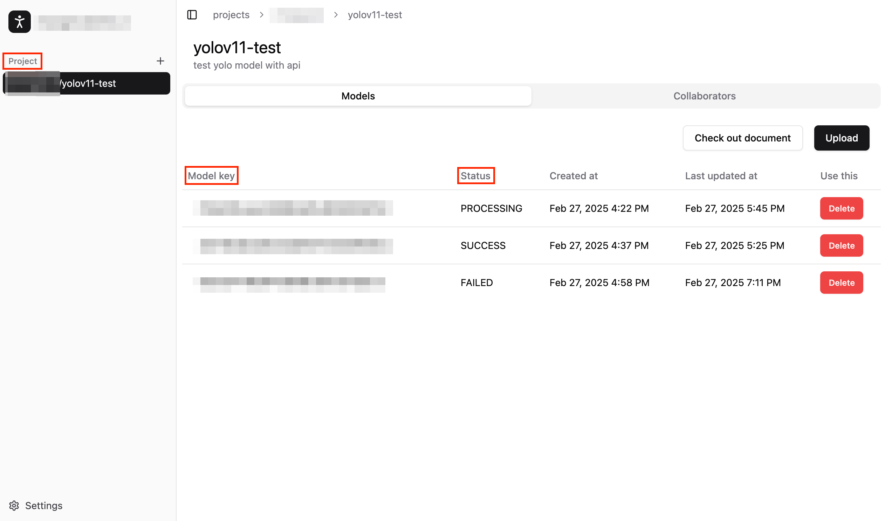

Generate Model Key#
To run the prepared model with ZETIC.MLange, you need to generate a model key. We offer two primary methods: Web Dashboard (SaaS) and CLI (Command Line Interface).
You MUST initiate with the Web Dashboard method first, and then you can switch to the CLI method for convenience.
Terms about Generating Key#
In ZETIC.MLange, several key terms are essential for managing and utilizing your models. Below is an overview of these terms to help you understand the process of generating a model key:
Project#
A Project is a workspace where you can manage all your converted models. It is recommended to have one model per project for better organization.
Model Key#
A Model Key is a unique identifier used to access and utilize a specific model within ZETIC.MLange. This key is essential for running the model.
Status#
The Status indicates the preprocessing steps required to prepare the model for use with the Model Key. If the Status is SUCCESS, you can proceed to run the model with ZETIC.MLange using the model key.
Personal Key#
The Personal Key is a key that verifies access permissions for the model. You can check the key you own by going to the settings -> Personal access token
Generate Model Key